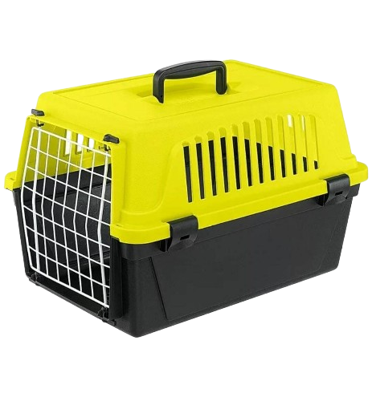
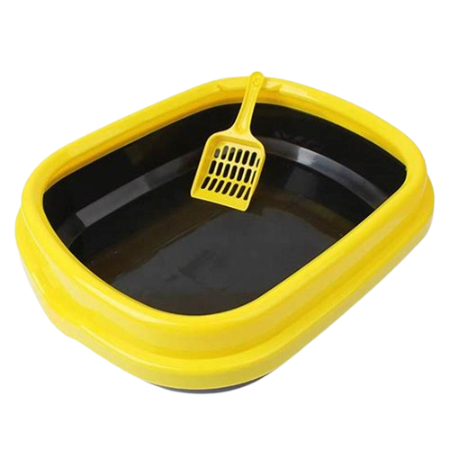
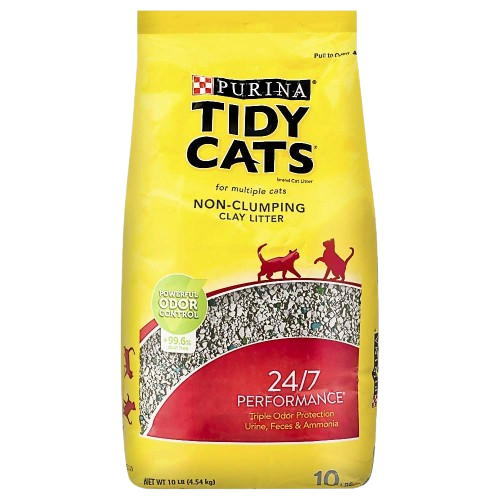
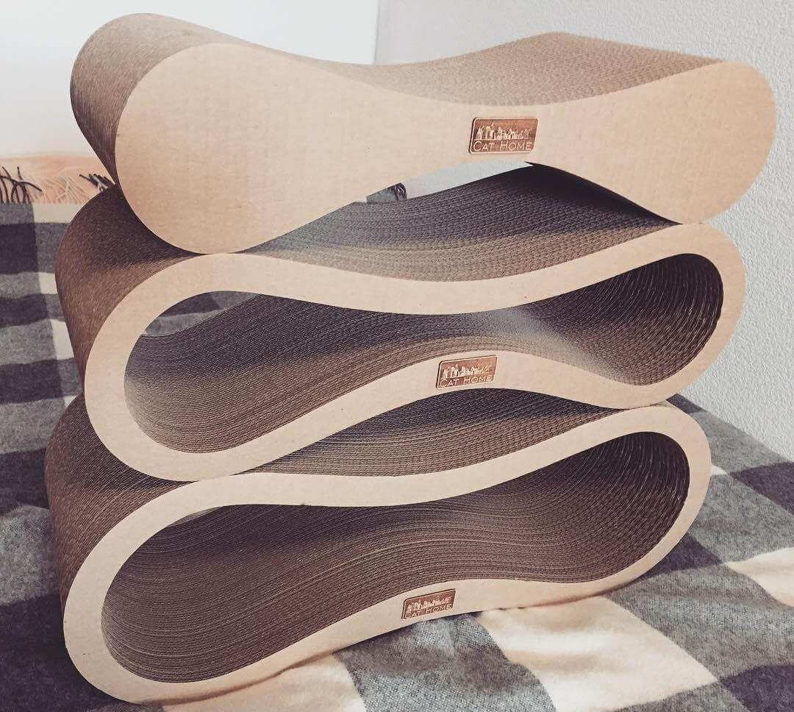
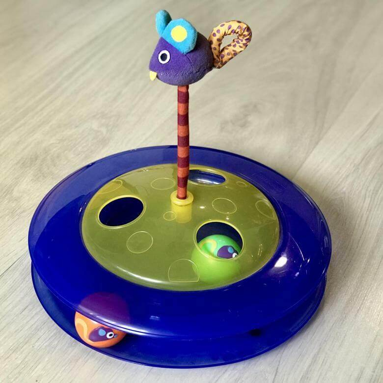
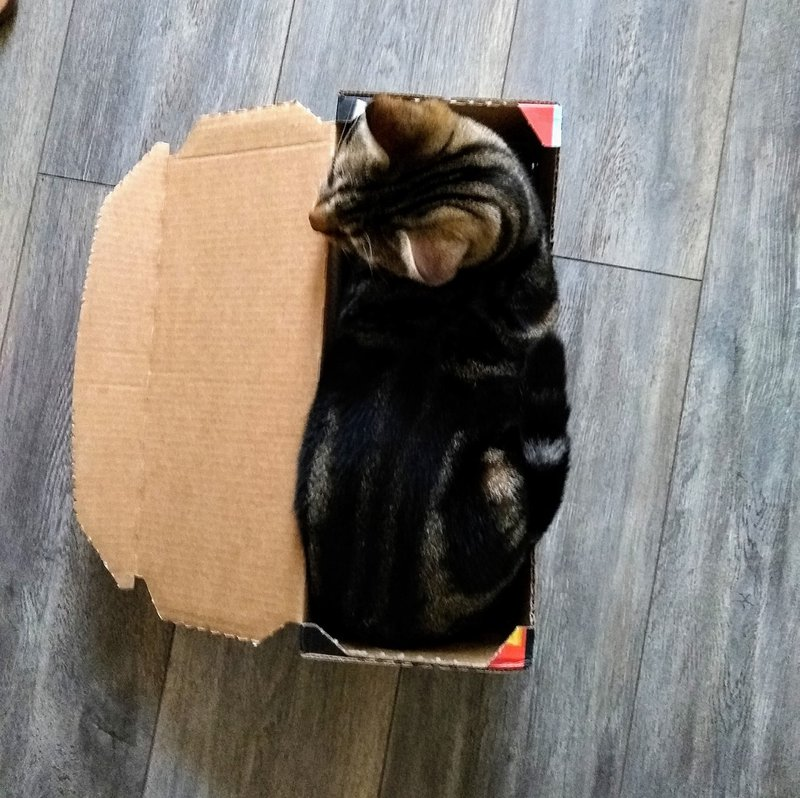

How do you take a cat home?
 You need to meet the cat in person at CateCafe and be sure of your intentions
Leave your e-mail address -
on it we will send the questionnaire of a potential host
Fill out the questionnaire, send it back to us,
after that we will pass it to the kitty's handler
The curator will review the questionnaire and
contact you at the phone number listed on the questionnaire
Interview with curator
If approved, the handler will bring the cat to you
When the animal is moved,
we draw up an act of transfer of the animal and a receipt of responsible custody,
in accordance with current legislation
If you already have a cat/cats,
they need to have valid vaccinations and exclude CVI (chronic viral infections),
the curator will tell you about it. These are usually leukemia, immunodeficiency,
feline coronovirus.
You need to meet the cat in person at CateCafe and be sure of your intentions
Leave your e-mail address -
on it we will send the questionnaire of a potential host
Fill out the questionnaire, send it back to us,
after that we will pass it to the kitty's handler
The curator will review the questionnaire and
contact you at the phone number listed on the questionnaire
Interview with curator
If approved, the handler will bring the cat to you
When the animal is moved,
we draw up an act of transfer of the animal and a receipt of responsible custody,
in accordance with current legislation
If you already have a cat/cats,
they need to have valid vaccinations and exclude CVI (chronic viral infections),
the curator will tell you about it. These are usually leukemia, immunodeficiency,
feline coronovirus.
What does a cat need at home?
Сarrier
Every self-respecting cat should have a carrier. Practicality, durability and comfort should be the priority criteria in choosing one. And there is nothing more suitable than carriers made of plastic, no fabric. The best carriers, in our opinion, are Ferplast Atlas 10.

Tray
When choosing a tray, it is worth paying attention to models with high sides and without mesh. The higher the edge, the better. There are closed litter trays and litter trays. Cats love them, and the filler does not spill out on the floor. And don't forget the spatula

Filler
Buy the filler recommended by the store, but over time you can pick up any other filler that you and the cat will like

Scratching post
The best scratching post is a scratching post with a height of at least 80 cm. Cats love to climb on them as on trees. There are scratching posts, joint with houses. There are also cool scratching posts made of cardboard

Toys
The choices are endless. You can take several variants to try. The most important thing is to avoid toys with small parts, for example, with glued on eyes. There are also cheap little mice - they are very easy to swallow! Try to choose toys that are bulkier and not collapsible.

Sleeping space
You don't need to spend money on expensive beds and houses right away. When the pet gets used to it, it will choose its own place to sleep in the house, and it will be easier for you to understand which bed or house to buy.

Window nets
Windows that open for ventilation should have screens installed even if you live on the first floor